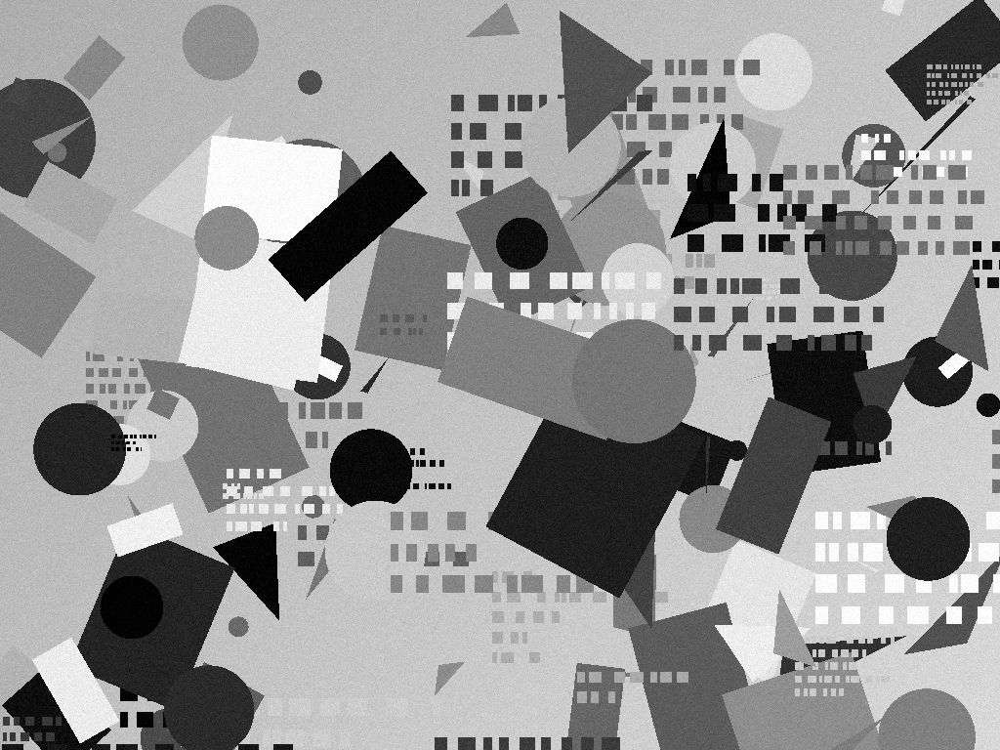

Slow devices & synchronized display
Show the image below on another screen or print it 20 cm wide. Start tracking, then increase the extra work per frame. Watch the pixel ratio and optional particles step down as the page becomes overloaded. Remove the load and give it a few seconds to recover.
The load slider deliberately blocks the main thread to simulate expensive app rendering; it does not fake the tracker's measurements. A fast device may not need to reduce quality at low loads.
With synchronized display, the background is FrameEvent.image, drawn by the three.js adapter
with that frame's pose. Stop, uncheck the option and restart to compare with the live video background.
